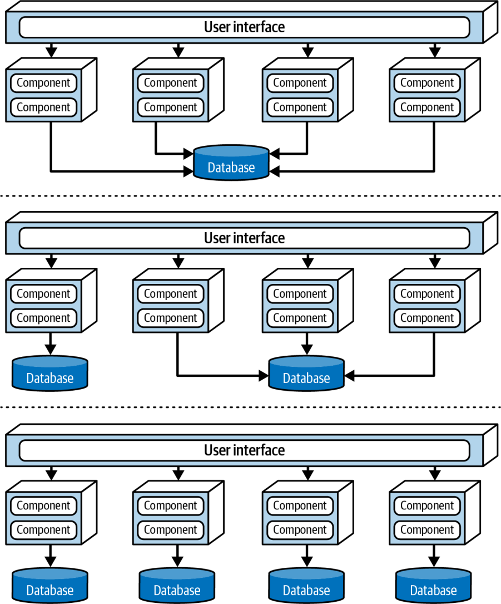
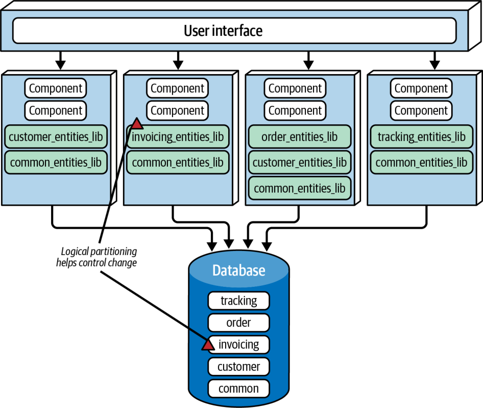

معماری مبتنی بر سرویس گونهای ترکیبی از سبک معماری میکروسرویسهاست و، عمدتاً به دلیلِ انعطافپذیریاش، یکی از عملگراترین سبکهای موجود به شمار میآید. هرچند معماری مبتنی بر سرویس توزیعشده است، سطحِ پیچیدگی و هزینهٔ دیگر معماریهای توزیعشده (مانندِ میکروسرویسها یا معماری رویدادمحور) را ندارد و همین آن را به گزینهای محبوب برای برنامههای کسبوکاری تبدیل کرده است.
توپولوژی
توپولوژیِ پایهٔ معماری مبتنی بر سرویس از ساختاری توزیعشده و کلانلایهای (macro-layered) پیروی میکند که از یک رابط کاربریِ جداگانهمستقرشده، سرویسهای درشتدانه و دورِ جداگانهمستقرشده و، بهصورتِ اختیاری، یک پایگاهدادهٔ تکپارچه تشکیل میشود.
هرچند شکل ۱۴-۱ توپولوژیِ پایهٔ این سبک را نشان میدهد، این توپولوژی ممکن است تفاوتهای بسیاری داشته باشد، از جمله بهکارگیریِ رابطهای کاربریِ جداگانه و پایگاهدادههای جداگانه. این فصل این گونههای توپولوژی را بهتفصیل شرح میدهد.
سرویسها در این سبک معماری معمولاً نمایانگرِ یک حوزه یا زیرحوزهٔ مشخص در سیستماند و از این رو سرویسهای حوزهای نامیده میشوند. سرویسهای حوزهای عموماً درشتدانهاند و بخشی از کارکردِ سیستم را بازنمایی میکنند (مانندِ انجامِ سفارش یا ارسالِ سفارش). این سرویسها معمولاً از یکدیگر مستقلاند و جداگانه مستقر میشوند. سرویسها معمولاً به همان شیوهای مستقر میشوند که هر برنامهٔ تکپارچهای مستقر میشود، بنابراین به کانتینرسازی (containerization) نیازی ندارند (هرچند استقرارِ یک سرویسِ حوزهای در کانتینری مانندِ Docker یا Kubernetes قطعاً یک گزینه است). هنگامِ بهکارگیریِ یک پایگاهدادهٔ تکپارچهٔ واحد، معمار باید بکوشد شمارِ سرویسهای حوزهای را به کمترین حد برساند (ما توصیه میکنیم بیش از ۱۲ نباشد) تا از مشکلاتِ کنترلِ تغییر (change control)، مقیاسپذیری و تحمل خطا پرهیز شود.
شکل ۱۴-۱. توپولوژیِ پایهٔ سبک معماری مبتنی بر سرویس
معمولاً هر سرویسِ حوزهای بهصورتِ یک نمونهٔ واحد مستقر میشود. اما معماران گاهی، بر پایهٔ نیازهای سیستم به مقیاسپذیری، تحمل خطا و توان عملیاتی، چندین نمونه از یک سرویسِ حوزهای میسازند. این کار معمولاً به نوعی قابلیتِ توازنبار میانِ رابط کاربری و سرویسِ حوزهای نیاز دارد تا رابط کاربری به یک نمونهٔ سالم و در دسترس از سرویس هدایت شود.
رابط کاربری از راهِ یک پروتکلِ دسترسی دور، که معمولاً REST است، به سرویسها دسترسی دارد. گزینههای دیگر عبارتاند از پیامرسانی، فراخوانیِ رویهٔ دور (remote procedure call یا RPC)، یک لایهٔ API با پراکسی (proxy) یا دروازه، یا حتی SOAP. اما در بیشترِ موارد، رابط کاربری الگوی service locator را در خود تعبیه کرده است تا بتواند مستقیماً به سرویسها دسترسی داشته باشد؛ الگوی service locator را میتوان درونِ یک دروازهٔ API (API Gateway) یا پراکسی نیز تعبیه کرد.
معماری مبتنی بر سرویس معمولاً از یک پایگاهدادهٔ تکپارچهٔ مشترکِ مرکزی استفاده میکند. این امر به سرویسها امکان میدهد درست مانندِ یک معماری لایهایِ تکپارچهٔ سنتی، از پرسوجوها و پیوندهای (joins) SQL بهره بگیرند. به دلیلِ شمارِ اندکِ سرویسهای حوزهای که معمولاً در این سبک معماری یافت میشوند، تمامشدنِ اتصالهای پایگاهدادهٔ در دسترس بهندرت مشکلساز میشود. اما مدیریتِ تغییرات در پایگاهداده میتواند چالشبرانگیز باشد. بخش «توپولوژیهای داده» در صفحهٔ ۲۱۵ فنونی را برای پرداختن به تغییرات پایگاهداده و مدیریتِ آنها در معماری مبتنی بر سرویس شرح میدهد.
ویژگیهای خاصِ سبک
از آنجا که سرویسهای حوزهای در معماری مبتنی بر سرویس عموماً درشتدانهاند، هر سرویسِ حوزهای معمولاً با سبک معماری لایهای طراحی میشود که از یک لایهٔ API Facade، یک لایهٔ Business و یک لایهٔ Persistence تشکیل شده است. رویکردِ طراحیِ محبوبِ دیگر، افرازِ هر سرویسِ حوزهای به زیرحوزههاست، مشابهِ سبک معماری تکپارچهٔ ماژولار (فصل ۱۱ را ببینید). هر دو رویکرد در شکل ۱۴-۲ نشان داده شدهاند.
شکل ۱۴-۲. گونههای طراحیِ سرویسِ حوزهای
طراحیِ سرویسِ حوزهای هر چه باشد، باید نوعی نمای دسترسیِ API (API access facade) داشته باشد که رابط کاربری برای اجرای کارکردی کسبوکاری با آن تعامل کند. نمای دسترسیِ API معمولاً مسئولیتِ ارکستراسیونِ درخواستِ کسبوکاریِ رسیده از رابط کاربری را بر عهده میگیرد.
نمونهای از یک سایتِ تجارت الکترونیک با معماری مبتنی بر سرویس را در نظر بگیرید. یک درخواستِ کسبوکاری از رابط کاربری میرسد: مشتریای در حالِ سفارشِ چند کالاست. این درخواستِ واحد را نمای دسترسیِ API درونِ سرویسِ حوزهایِ OrderService دریافت میکند. نمای دسترسیِ API همهٔ کارهایی را که برای انجامِ این درخواست باید رخ دهند، بهطورِ درونی ارکستره میکند: ثبتِ سفارش، تولیدِ شناسهٔ سفارش، اعمالِ پرداخت و بهروزرسانیِ موجودیِ هر محصولِ سفارشدادهشده. در معماری میکروسرویسها، انجامِ این درخواست احتمالاً مستلزمِ ارکستراسیونِ شمارِ زیادی سرویسِ دور، تکمنظوره و جداگانهمستقرشده است. این تفاوت در دانهبندی، یعنی ارکستراسیونِ درونی در سطحِ کلاس در معماری مبتنی بر سرویس در برابرِ ارکستراسیونِ بیرونیِ سرویسها در میکروسرویسها، به یکی از تفاوتهای مهمِ فراوانِ میانِ این دو سبک اشاره دارد.
از آنجا که سرویسهای حوزهای درشتدانهاند، تراکنشهای معمولِ پایگاهدادهٔ ACID (اتمیبودن، سازگاری، انزوا، ماندگاری) با ثبت (commit) و بازگردانیهای (rollback) استانداردِ پایگاهداده میتوانند یکپارچگیِ پایگاهداده را درونِ یک سرویسِ حوزهایِ واحد تضمین کنند. این را با سرویسهای ریزدانه و تکمنظورهٔ معماریهای بهشدت توزیعشده مانندِ میکروسرویسها مقایسه کنید که از فنِ تراکنشِ توزیعشدهای به نامِ تراکنشهای BASE (دسترسپذیریِ پایه، حالتِ نرم، سازگاریِ نهایی) استفاده میکنند. چنین سرویسهای ریزدانهای از همان سطحِ یکپارچگیِ پایگاهدادهای که تراکنشهای ACID در معماری مبتنی بر سرویس فراهم میکنند، پشتیبانی نمیکنند.
برای روشنشدنِ این نکته، فرایندِ تسویهحسابِ سفارش را در نمونهٔ سایتِ تجارت الکترونیکِ مبتنی بر سرویسِ خود در نظر بگیرید. فرض کنید مشتری سفارشی ثبت میکند، اما کارت اعتباریای که برای پرداخت به کار میبرد منقضی شده است. از آنجا که این پرداخت یک تراکنشِ اتمی درونِ همان سرویس است، سرویس میتواند با یک بازگردانیِ استانداردِ تراکنش، هر آنچه را تا این لحظه به پایگاهداده افزوده شده است حذف کند. سرویس به مشتری اطلاع میدهد که پرداخت اعمالشدنی نیست.
اکنون همین فرایند را در معماری میکروسرویسها، با سرویسهای کوچکتر و ریزدانهاش، در نظر بگیرید. نخست، سرویسِ OrderPlacement درخواست را میپذیرد، سفارش را میسازد، شناسهٔ سفارش را تولید میکند و سفارش را در جدولهای سفارش درج میکند. پس از این کار، سرویسِ OrderPlacement یک فراخوانیِ دور به PaymentService انجام میدهد که میکوشد پرداخت را اعمال کند. اگر پرداخت به دلیلِ منقضیشدنِ کارت اعتباری اعمال نشود، سفارش نمیتواند ثبت شود. اکنون دادهها در وضعیتی ناسازگار قرار دارند: اطلاعاتِ سفارش پیشتر درج شده، اما تأیید نشده است. برای بازگرداندنِ دادهها به وضعیتی سازگار، باید اقدامِ جداگانهای به نامِ بهروزرسانی جبرانی (که در فصل ۹ بررسی شد) روی سرویسِ OrderPlacement اعمال شود.
طراحی و دانهبندیِ سرویس
از آنجا که سرویسهای حوزهای درشتدانهاند، یکپارچگی و سازگاریِ بهتری برای دادهها فراهم میکنند، اما یک مصالحهٔ بزرگ در کار است. در معماری مبتنی بر سرویس، تغییرِ کارکردِ ثبتِ سفارش در OrderService تیم را ناچار میکند همهٔ کارکردهای سرویس، از جمله پردازشِ پرداخت، را دوباره بیازماید و مستقر کند. اما در معماری میکروسرویسها، همین تغییر فقط بر سرویسِ کوچکتر و ریزدانهٔ OrderPlacement اثر میگذارد و هیچ آزمون یا استقراری برای PaymentService لازم نیست. افزون بر این، از آنجا که یک سرویسِ حوزهای کارکردهای بیشتری را مستقر میکند، ریسکِ اینکه چیزِ دیگری (از جمله پردازشِ پرداخت) از کار بیفتد بیشتر است. در میکروسرویسها، هر سرویس مسئولیتِ واحدی دارد، بنابراین هنگامِ اعمالِ تغییرات احتمالِ ازکارافتادنِ کارکردهای دیگر کمتر است.
گزینههای رابط کاربری
سبک معماری مبتنی بر سرویس گونههای فراوانی از رابط کاربری را در بر میگیرد و همین آن را بسیار انعطافپذیر میکند. برای نمونه، معمار میتواند رابط کاربریِ تکپارچهٔ واحدی را که در شکل ۱۴-۱ نشان داده شده است، به رابطهای کاربریِ جداگانه بشکند، حتی تا جایی که هر رابط کاربری با یک سرویسِ حوزهای متناظر باشد. این کار مقیاسپذیری، تحمل خطا و چابکیِ کلیِ سیستم را افزایش میدهد. این گونههای رابط کاربری در شکل ۱۴-۳ نشان داده شدهاند.
شکل ۱۴-۳. سه گونهٔ رابط کاربری در معماری مبتنی بر سرویس
برای نمونه، یک سیستمِ سفارشگیریِ متداول میتواند یک رابط کاربری برای ثبتِ سفارش توسط مشتریان داشته باشد و رابطهای کاربریِ داخلیِ جداگانهای برای بستهبندانِ سفارش، تا کالاهایی را که باید بستهبندی شوند ببینند، و برای پشتیبانیِ مشتریان.
گزینههای دروازهٔ API
به لطفِ انعطافپذیریِ این سبک معماری، میتوان میانِ رابط کاربری و سرویسها یک لایهٔ API، متشکل از یک پراکسیِ معکوس (reverse proxy) یا دروازهٔ API، افزود؛ چنانکه در شکل ۱۴-۴ نشان داده شده است. این کار برای چند منظور سودمند است: در معرضِ دیدِ سیستمهای بیرونی قراردادنِ کارکردِ سرویسهای حوزهای؛ یکپارچهکردنِ دغدغههای میانبُرشیِ (cross-cutting concerns) مشترک (مانندِ معیارها، امنیت، نیازمندیهای ممیزی و کشفِ سرویس (service discovery)) و انتقالِ آنها به دروازهٔ API؛ و توازنبار برای سرویسهای حوزهای که چندین نمونه دارند.
شکل ۱۴-۴. افزودنِ یک لایهٔ API میانِ رابط کاربری و سرویسهای حوزهای
توپولوژیهای داده
معماری مبتنی بر سرویس گزینههای بسیاری برای توپولوژی پایگاهداده (database topology) پیش روی معماران میگذارد و این خود گواه دیگری بر انعطافپذیری آن است. این سبک از این نظر یگانه است که معماریای توزیعشده است و در عین حال میتواند بهخوبی از یک پایگاهدادهٔ تکپارچه پشتیبانی کند. با این حال، میتوان همان پایگاهدادهٔ تکپارچهٔ واحد را به پایگاهدادههای جداگانه شکست و حتی تا جایی پیش رفت که برای هر سرویس حوزهای یک پایگاهدادهٔ همدامنه با حوزه (domain-scoped database) ساخت (همانند میکروسرویسها). اگر معمار از چند پایگاهدادهٔ جداگانه استفاده کند، باید مطمئن شود که هیچ سرویس حوزهای دیگری به دادههای هر یک از این پایگاهدادهها نیاز ندارد؛ چنین نیازی ممکن است ارتباط میانسرویسی (interservice communication) میان سرویسهای حوزهای را به دنبال داشته باشد. در این سبک معماری، معمولاً به اشتراکگذاشتنِ داده بر فراخوانیِ یک سرویس حوزهای دیگر ترجیح دارد. این گونههای پایگاهداده در شکل ۱۴-۵ نشان داده شدهاند.

شکل ۱۴-۵. توپولوژیهای پایگاهداده در معماری مبتنی بر سرویس
هرچند این سبک معماری از پایگاهدادهٔ تکپارچه پشتیبانی میکند، تغییر در طرحوارهٔ جدولهای پایگاهداده، اگر درست انجام نشود، میتواند بر همهٔ سرویسهای حوزهای اثر بگذارد. همین امر تغییر پایگاهداده را به کاری بسیار پرهزینه و پرخطر بدل میکند که تلاش و هماهنگی فراوان و قابلیت اطمینانِ کلیِ بالایی میطلبد.
در معماری مبتنی بر سرویس، فایلهای کلاسِ مشترکی که طرحوارهٔ جدولهای پایگاهداده را بازنمایی میکنند (و اشیای موجودیت (entity objects) نامیده میشوند) معمولاً در یک کتابخانهٔ مشترکِ سفارشی قرار دارند که همهٔ سرویسهای حوزهای از آن استفاده میکنند؛ مانند یک فایل JAR یا DLL. این کتابخانههای مشترک ممکن است کد SQL نیز در خود داشته باشند. ساختنِ یک کتابخانهٔ مشترکِ واحد برای همهٔ اشیای موجودیت، کماثرترین شیوهٔ پیادهسازیِ معماری مبتنی بر سرویس است. هر تغییری در ساختار جدولهای پایگاهداده، تغییرِ آن کتابخانهٔ اشیای موجودیتِ متناظر را نیز لازم میکند؛ یعنی باید همهٔ سرویسها را تغییر داد و دوباره مستقر کرد، فارغ از اینکه واقعاً به جدولِ تغییریافته دسترسی دارند یا نه. نسخهبندیِ کتابخانهٔ مشترک میتواند به حل این مسئله کمک کند، اما بدون تحلیل دستیِ دقیق همچنان دشوار است بدانیم تغییرِ جدول بر کدام سرویسها اثر میگذارد. این سناریو، که در معماری مبتنی بر سرویس ضدالگو به شمار میآید، در شکل ۱۴-۶ نشان داده شده است.
شکل ۱۴-۶. استفاده از یک کتابخانهٔ مشترکِ واحد برای اشیای موجودیتِ پایگاهداده باعث میشود هر تغییر بر همهٔ سرویسها اثر بگذارد و در معماری مبتنی بر سرویس ضدالگو به شمار میآید
یکی از راههای کاستن از اثر و ریسکِ تغییرات پایگاهداده این است که پایگاهداده را بهصورت منطقی افراز کنیم و این افراز منطقی (logical partitioning) را با کتابخانههای مشترکِ جداگانه بازنمایی کنیم. توجه کنید که در شکل ۱۴-۷ پایگاهداده بهصورت منطقی به پنج حوزهٔ جداگانه افراز شده است: common، customer، invoicing، order و tracking. سرویسهای حوزهای از پنج کتابخانهٔ مشترکِ متناظر استفاده میکنند که با افرازهای منطقیِ پایگاهداده همخواناند. با این فن، هر تغییری که معمار در جدولی از یک حوزهٔ منطقیِ مشخص (در این مثال، Invoicing) ایجاد کند، تنها با کتابخانهٔ مشترکِ متناظری همخوان میشود که اشیای موجودیت (و احتمالاً کد SQL) آن حوزه را در بر دارد. تنها سرویسهایی تحت تأثیر قرار میگیرند که از آن کتابخانهٔ مشترک استفاده میکنند. این تغییر بر هیچ سرویس دیگری اثر نمیگذارد، پس نیازی به آزمون و استقرار دوبارهٔ آنها نیست.

شکل ۱۴-۷. استفاده از چند کتابخانهٔ مشترک برای اشیای موجودیتِ پایگاهداده
در شکل ۱۴-۷، پایگاهداده یک حوزهٔ Common و کتابخانهٔ مشترکِ متناظرِ آن، common_entities_lib، را در بر دارد که همهٔ سرویسها از آن استفاده میکنند. چنین وضعی نسبتاً رایج است.
از آنجا که این جدولها میان همهٔ سرویسها مشترکاند، تغییرشان مستلزم هماهنگکردنِ همهٔ سرویسهایی است که به پایگاهدادهٔ مشترک دسترسی دارند. یکی از راههای کاستن از اثرات جانبیِ موجی (rippling side effects) احتمالیِ تغییر در این جدولها (و در اشیای موجودیت و سرویسهای حوزهایِ متناظرشان) این است که اشیای موجودیتِ مشترک را در سیستم کنترل نسخه (در صورت وجود) قفل کنیم و تنها به تیم پایگاهداده اجازهٔ تغییرشان را بدهیم. این کار به کنترل تغییر کمک میکند و بر اهمیتِ تغییر در جدولهای مشترکی که همهٔ سرویسها به کار میبرند تأکید میگذارد.
ملاحظات ابری
سبک مبتنی بر سرویس، چون معماریای توزیعشده است، در محیطهای ابری بهخوبی کار میکند، هرچند سرویسهای حوزهایاش معمولاً درشتدانهاند. سرویسهای حوزهای به دلیل گسترهٔ بزرگشان معمولاً بهصورت سرویسهای کانتینری پیادهسازی میشوند، نه بهصورت توابع بدون سرور، و میتوانند بهآسانی از ذخیرهسازی فایل، پایگاهداده و سرویسهای پیامرسانیِ ابری بهره بگیرند.
ریسکهای رایج
ارتباط میانسرویسی در میکروسرویسها امری عادی است، اما معماران در سبک معماری مبتنی بر سرویس میکوشند از آن پرهیز کنند. در حالت آرمانی، حوزهها باید تا حد امکان مستقل باشند و کوپلینگ فقط در سطح پایگاهداده متمرکز باشد. ارتباطِ بیش از حد میان سرویسهای حوزهای نشانهٔ خوبی است از اینکه یا معمار حوزهها را درست افراز نکرده است، یا این سبک معماری برای مسئلهای که در پی حلِ آن است مناسب نیست.
ریسک رایج دیگر، ساختنِ سرویسهای حوزهایِ بیش از اندازه است. سقفِ عملی حدود ۱۲ سرویس است. هر تعدادی بیش از این احتمالاً در آزمون، استقرار، پایش و نیز اتصالها و تغییرات پایگاهداده مشکلساز میشود.
حاکمیت
معماران افزون بر فنون رایجِ حاکمیت ساختاری و عملیاتیِ معماری که در سراسر این کتاب بررسی شدهاند، مانند پیچیدگی چرخهای، مقیاسپذیری، پاسخگویی و جز آن، میتوانند آزمونهای حاکمیتیِ ویژهای را نیز به کار گیرند تا از یکپارچگی ساختاری (structural integrity) معماری مبتنی بر سرویس اطمینان یابند.
از آنجا که سرویسهای حوزهای باید تا حد امکان مستقل باشند، نخستین جنبهٔ حاکمیت بر این سبک، اطمینان از این است که تغییرات در چند سرویس حوزهای پخش نشوند. اگر چنین شود، نشانهٔ خوبی است از اینکه مرزهای حوزه (domain boundaries) بهدرستی تعریف نشدهاند، یا اینکه سبک مبتنی بر سرویس مناسبترین سبک معماری برای آن مسئله نیست.
هنگامی که ارتباط میانسرویسی در دسترس نیست، معماران میتوانند میزان ارتباط میان سرویسهای حوزهای را نیز تحت حاکمیت درآورند. بیگمان موقعیتها و گردشکارهایی وجود دارد که در آنها یک سرویس حوزهای باید با سرویس دیگری ارتباط برقرار کند؛ برای نمونه، حوزهٔ OrderProcessing ممکن است لازم باشد با حوزهٔ Customer Notification ارتباط برقرار کند تا اطلاعات وضعیت سفارش را برای مشتری ایمیل کند. با این همه، سرویسهای حوزهای در بیشتر موارد باید تا حد زیادی از یکدیگر مستقل باشند و ارکستراسیون در سطح رابط کاربری یا دروازهٔ API انجام شود.
ملاحظاتِ توپولوژی تیم
از آنجا که معماریهای مبتنی بر سرویس بهصورت حوزهای افراز میشوند، زمانی بهترین کارایی را دارند که تیمها نیز بر پایهٔ حوزه سازمان یافته باشند (مانند تیمهای چندتخصصی با تخصصهای گوناگون). هنگامی که نیازمندیای مبتنی بر حوزه از راه میرسد، یک تیم چندتخصصیِ حوزهمحور میتواند بیآنکه در کار تیمها یا سرویسهای دیگر مداخله کند، درونِ یک سرویس حوزهایِ مشخص روی آن قابلیت کار کند. در مقابل، تیمهایی که بهصورت فنی افراز شدهاند (technically partitioned teams)، مانند تیمهای رابط کاربری، تیمهای بکاند، تیمهای پایگاهداده و مانند آن، به دلیل افراز حوزهایِ این سبک معماری با آن سازگاری خوبی ندارند. سپردنِ نیازمندیهای حوزهمحور به تیمی که بهصورت فنی سازمان یافته است، سطحی از ارتباط و همکاریِ میانتیمی (interteam communication) را میطلبد که در بیشتر سازمانها دشوار از آب درمیآید.
در ادامه چند ملاحظه برای معماران دربارهٔ همراستاسازیِ معماری مبتنی بر سرویس با توپولوژیهای تیمِ مشخصی آمده است که در بخش «توپولوژیهای تیم و معماری» در صفحهٔ ۱۵۱ معرفی شدند:
تیمهای همراستا با جریان: اگر مرزهای حوزه بهدرستی همراستا شده باشند، تیمهای همراستا با جریان با این سبک معماری بهخوبی کار میکنند، بهویژه وقتی جریانهایشان بر یک حوزهٔ مشخص متمرکز باشد. اما هنگامی که جریانها از مرزهایی که سرویسهای حوزهای تعریف کردهاند عبور کنند، معماری مبتنی بر سرویس چالشبرانگیزتر میشود. در این حالت، معمار باید مرزها و دانهبندیِ سرویسهای حوزهای را تحلیل کند و یا آنها را با جریانها همراستا کند یا سبک معماری دیگری برگزیند.
تیمهای توانمندساز: معماری مبتنی بر سرویس، به دلیل ماهیت درشتدانهٔ سرویسهای حوزهایاش، در کنار توپولوژی تیم توانمندساز به اندازهٔ دیگر معماریهای توزیعشده اثربخش نیست. با این حال، معمار میتواند با شناسایی و ساختنِ سنجیدهٔ مؤلفههای مناسب درون هر سرویس حوزهای، ماژولاریتیِ این سبک را افزایش دهد. آنگاه متخصصان و اعضای میانبُرشی تیم میتوانند بر پایهٔ همین مؤلفهها پیشنهاد دهند و آزمایش انجام دهند.
تیمهای زیرسیستم پیچیده: تیمهای زیرسیستم پیچیده میتوانند از ماژولاریتیِ این سبک معماری در سطح حوزه و زیرحوزه بهره بگیرند تا مستقل از دیگر اعضای تیم (و دیگر سرویسها) بر پردازشهای پیچیدهٔ حوزه یا زیرحوزه تمرکز کنند.
تیمهای پلتفرم: درجهٔ بالای ماژولاریتی در معماری مبتنی بر سرویس به تیمها کمک میکند با بهکارگیریِ ابزارها، سرویسها، APIها و وظایف مشترک، از مزایای توپولوژی تیم پلتفرم بهره ببرند.
ویژگیهای سبک
در جدول رتبهبندیِ ویژگیها در شکل ۱۴-۸، رتبهٔ یکستاره یعنی آن ویژگی معماریِ مشخص در این معماری بهخوبی پشتیبانی نمیشود، در حالی که رتبهٔ پنجستاره یعنی آن ویژگی معماری یکی از قویترین جنبههای این سبک معماری است. تعریفِ هر یک از ویژگیهایی که در این کارنامه آمدهاند در فصل ۴ یافت میشود.
شکل ۱۴-۸. رتبهبندیِ ویژگیهای معماری مبتنی بر سرویس
معماری مبتنی بر سرویس معماریای با افراز حوزهای است؛ یعنی ساختارش را حوزهها شکل میدهند، نه ملاحظات فنی (مانند منطق ارائه یا منطق ماندگاری (persistence logic)).
نمونهٔ برنامهٔ بازیافت لوازم الکترونیکیِ Going Green را در نظر بگیرید که آن را در فصل ۷ معرفی کردیم و در فصل ۱۳ دوباره به سراغش رفتیم. در این فصل، فرض کنیم Going Green از سبک معماری مبتنی بر سرویس استفاده میکند. هر سرویس، که واحدی نرمافزاری با استقرار جداگانه است، به یک حوزهٔ مشخص (مانند ارزیابیِ اقلام) محدود میشود. تغییراتی که درون این حوزه ایجاد شوند، فقط بر همان سرویس و رابط کاربری و پایگاهدادهٔ متناظرش اثر میگذارند. برای پشتیبانی از یک تغییرِ مشخص در ارزیابی، لازم نیست هیچ چیز دیگری تغییر کند.
در یک معماری توزیعشده، تعداد کوانتومها میتواند بزرگتر از یک یا برابر با یک باشد. برای نمونه، اگر همهٔ سرویسهای Going Green پایگاهداده یا رابط کاربریِ یکسانی را به اشتراک بگذارند، کل سیستم تنها یک کوانتوم خواهد بود. اما همانطور که در بخش «ویژگیهای خاصِ سبک» در صفحهٔ ۲۱۱ گفته شد، هم رابط کاربری و هم پایگاهداده را میتوان فدراتیو (federated) کرد، یعنی از هم شکست، و در نتیجه چندین کوانتوم درون کل سیستم پدید آورد. در شکل ۱۴-۹، سیستم Going Green دو کوانتوم دارد. یکی به بخشِ مشتریمحورِ برنامه مربوط است و رابط کاربری، پایگاهداده و مجموعهسرویسهای (Quoting و Item Status) جداگانهٔ مشتری را در بر دارد. دیگری به عملیات داخلیِ دریافت، ارزیابی و بازیافت دستگاههای الکترونیکی میپردازد. هرچند کوانتومِ عملیات داخلی سرویسهایی با استقرار جداگانه و دو رابط کاربریِ جدا دارد، همهٔ آنها پایگاهدادهٔ یکسانی را به اشتراک میگذارند و همین امر بخشِ عملیات داخلیِ برنامه را به یک کوانتومِ واحد بدل میکند.
شکل ۱۴-۹. کوانتومهای جداگانه در معماری مبتنی بر سرویس
هرچند به معماری مبتنی بر سرویس هیچ رتبهٔ پنجستارهای ندادیم، این معماری در بسیاری از حوزههای حیاتی رتبهٔ بالایی (چهارستاره) میگیرد. شکستنِ یک برنامه به سرویسهای حوزهایِ جداگانهمستقرشونده با این سبک معماری، تغییرِ سریعتر (چابکی)، پوشش آزمونِ (test coverage) بهتر به لطف ماژولاریتیِ مبتنی بر محدودهٔ حوزه (آزمونپذیری) و امکانِ استقرارِ پرتکرارتر با ریسکی کمتر از معماری تکپارچه (استقرارپذیری) را فراهم میکند. این سه ویژگی به زمان عرضه به بازارِ بهتری میانجامند و به سازمانها امکان میدهند قابلیتهای تازه را عرضه کنند و باگها را نسبتاً سریع برطرف سازند.
تحمل خطا و در دسترسبودنِ کلیِ برنامه نیز در معماری مبتنی بر سرویس رتبهٔ بالایی میگیرند. با اینکه سرویسهای حوزهای معمولاً درشتدانهاند، رتبهٔ چهارستاره از این واقعیت سرچشمه میگیرد که سرویسها در این سبک معماری معمولاً خودبسندهاند و، به لطف اشتراکِ کد و پایگاهداده، معمولاً از ارتباط میانسرویسی استفاده نمیکنند. در نتیجه، اگر یک سرویس حوزهای از کار بیفتد (برای نمونه، سرویس Receiving در Going Green)، بر هیچیک از شش سرویس دیگر اثری نمیگذارد.
مقیاسپذیری به دلیل ماهیت درشتدانهٔ سرویسها تنها سه ستاره میگیرد و به همین ترتیب، کشسانی تنها دو ستاره. هرچند مقیاسپذیری و کشسانیِ برنامهای (programmatic) در این سبک معماری بیگمان ممکن است، این سبک در مقایسه با سبکهای معماریای که سرویسهای ریزدانهتری دارند (مانند میکروسرویسها) کارکردهای بیشتری را تکثیر میکند و از این رو از نظر منابع ماشین، کمصرفهتر و کمکاراتر است. معماریهای مبتنی بر سرویس معمولاً از هر سرویس تنها یک نمونه به کار میبرند، مگر آنکه به توان عملیاتیِ بیشتر یا جابهجایی هنگام خرابی (failover) نیاز باشد. نمونهٔ خوبِ این وضع، که در شکل ۱۴-۹ نشان داده شده، Going Green است: تنها سرویسهای Quoting و Item Status آن باید برای پشتیبانی از حجم بالای مشتریان مقیاسپذیر باشند. سرویسهای عملیاتیِ دیگر تنها به یک نمونه نیاز دارند و همین امر پشتیبانی از چیزهایی مانند کشگذاری درونحافظهایِ واحد و تجمیع اتصالهای پایگاهداده (database-connection pooling) را آسانتر میکند.
سادگی و هزینهٔ کلی دو محرک دیگرند که این سبک معماری را از دیگر معماریهای توزیعشدهٔ پرهزینهتر و پیچیدهتر، مانند میکروسرویسها، معماری رویدادمحور یا حتی معماری مبتنی بر فضا، متمایز میکنند. همین امر سبک مبتنی بر سرویس را به یکی از سادهترین و مقرونبهصرفهترین معماریهای توزیعشده برای پیادهسازی بدل میکند. هرچند این پیشنهادی جذاب است، مانند همیشه مصالحهای در کار است: هرچه هزینه و پیچیدگی بیشتر باشد، این ویژگیهای چهارستاره (مانند مقیاسپذیری، کشسانی و تحمل خطا) بهتر میشوند.
انعطافپذیریِ معماری مبتنی بر سرویس، در کنار ویژگیهای معماریِ سهستاره و چهارستارهٔ فراوانش، آن را به یکی از عملگراترین سبکهای موجود بدل میکند. هرچند سبکهای معماری توزیعشدهٔ بسیار قدرتمندتری وجود دارد، بسیاری از شرکتها درمییابند که این قدرت بهایی بیش از اندازه گزاف دارد. برخی دیگر درمییابند که اصلاً به این همه قدرت نیازی ندارند. این کار مانند خریدنِ یک Ferrari است که فقط برای رفتوآمد به محل کار در ترافیکِ ساعت اوج از آن استفاده کنید؛ البته که ظاهرش جذاب است، اما چه هدررفتی از قدرت، سرعت و چابکی!
معماری مبتنی بر سرویس با طراحی حوزهمحور نیز بهطور طبیعی سازگار است. از آنجا که سرویسها درشتدانه و محدود به حوزهاند، هر حوزه بهخوبی در یک سرویسِ جداگانهمستقرشونده جای میگیرد که همان حوزهٔ مشخص را در بر دارد. جایدادنِ آن کارکرد در یک واحد نرمافزاریِ واحد، اعمالِ تغییرات در آن حوزه را آسانتر میکند.
حفظ و هماهنگسازیِ تراکنشهای پایگاهداده همواره در معماریهای توزیعشده مسئلهساز است؛ این معماریها معمولاً بهجای تراکنشهای ACID سنتی (یعنی بهروزرسانیهای پایگاهداده بهصورت هماهنگ و با هم در یک واحد کار (unit of work) انجام میشوند) بر سازگاری نهایی (eventual consistency) تکیه میکنند (یعنی بهروزرسانیهای مستقلِ پایگاهداده سرانجام با یکدیگر همگام میشوند). معماری مبتنی بر سرویس، چون سرویسهای حوزهایاش درشتدانهاند، بهتر از هر سبک معماری توزیعشدهٔ دیگری از تراکنشهای ACID بهره میبرد. یعنی دامنهٔ تراکنش به یک سرویس حوزهایِ مشخص محدود میشود و همین امر کارکرد سنتیِ ثبت و بازگردانیِ تراکنش را، که در بیشتر برنامههای تکپارچه یافت میشود، ممکن میسازد.
سرانجام، معماری مبتنی بر سرویس برای معمارانی گزینهٔ خوبی است که میخواهند به سطح خوبی از ماژولاریتی برسند، بیآنکه در پیچیدگیهای دانهبندی و هماهنگسازیِ سرویسها گرفتار شوند (بخش «کرئوگرافی و ارکستراسیون» در صفحهٔ ۳۴۱ در فصل ۱۸ را ببینید).
نمونهها و موارد کاربرد
برای نشاندادنِ انعطافپذیری و توانِ سبک معماری مبتنی بر سرویس، دوباره به نمونهٔ Going Green بازمیگردیم؛ سیستمی که برای بازیافت دستگاههای الکترونیکیِ کهنه (مانند گوشی همراه iPhone یا Galaxy) به کار میرود.
جریان پردازشِ Going Green به این شرح است:
مشتری (از راه وبسایت یا کیوسک) از Going Green میپرسد که برای یک دستگاه الکترونیکیِ کهنه چه مبلغی میپردازد — حوزهٔ قیمتدهی (quoting).
اگر مشتری از قیمت پیشنهادی راضی باشد، دستگاه را برای شرکت بازیافت میفرستد — حوزهٔ دریافت (receiving).
Going Green وضعیت دستگاه را ارزیابی میکند — حوزهٔ ارزیابی (assessment).
اگر دستگاه سالم و کارا باشد، Going Green بهای آن را به مشتری میپردازد — حوزهٔ حسابداری (accounting). در طول این فرایند، مشتری میتواند هر زمان به وبسایت برود و وضعیت قلمِ خود را بررسی کند — حوزهٔ وضعیت قلم (item status).
Going Green بر پایهٔ نتیجهٔ ارزیابی، یا دستگاه را بهطور ایمن نابود میکند و قطعاتش را بازیافت میکند، یا آن را در یک پلتفرم فروشِ شخص ثالث، مانند Facebook Marketplace یا eBay، دوباره میفروشد — حوزهٔ بازیافت (recycling).
Going Green بهطور دورهای گزارشهای مالی و عملیاتی دربارهٔ فعالیت بازیافتِ خود تهیه میکند — حوزهٔ گزارشدهی (reporting).
شکل ۱۴-۱۰ این سیستم را در قالب پیادهسازی با معماری مبتنی بر سرویس نشان میدهد. هر یک از حوزههایی که برشمردیم بهصورت یک سرویس حوزهایِ مستقل با استقرار جداگانه پیادهسازی شده است. سرویسهایی که باید مقیاسپذیر باشند (و از این رو به چند نمونه از سرویس نیاز دارند) همانهاییاند که توان عملیاتیِ بالاتری میطلبند (در این مثال، سرویسهای مشتریمحورِ Quoting و ItemStatus). سرویسهای دیگر نیازی به مقیاسپذیری ندارند و از این رو تنها به یک نمونه از سرویس نیاز دارند.
شکل ۱۴-۱۰. برنامهٔ بازیافت لوازم الکترونیکیِ Going Green با استفاده از معماری مبتنی بر سرویس
در این نمونه، برنامههای رابط کاربری بر پایهٔ حوزه از هم جدا شدهاند: «مشتریمحور» (Customer Facing)، «دریافت» (Receiving) و «بازیافت و حسابداری» (Recycling and Accounting). این جداسازی در سطح رابط کاربری تحمل خطای خوب، مقیاسپذیریِ خوب و امنیتِ مناسب فراهم میکند (زیرا مشتریان بیرونی هیچ مسیر شبکهای برای دسترسی به کارکردهای داخلی ندارند). همچنین توجه کنید که دو پایگاهدادهٔ فیزیکیِ جداگانه وجود دارد: یکی برای عملیات بیرونیِ مشتریمحور و دیگری برای عملیات داخلی. این آرایش به دادهها و عملیات داخلی امکان میدهد در ناحیهٔ شبکهای (network zone) جدا از عملیات بیرونی قرار گیرند (که با خط افقی نشان داده شده است). این آرایش محدودیتهای دسترسیِ امنیتی و حفاظت از داده (data protection) را نیز بسیار بهتر میکند و یک کوانتوم معماریِ جداگانه پدید میآورد. دسترسیِ یکطرفه (one-way access) از میان دیوار آتش به سرویسهای داخلی امکان میدهد اطلاعات مشتریمحور را بخوانند و بهروز کنند، اما عکسِ آن ممکن نیست. بهعنوان راه دیگر، بسته به نوع پایگاهداده، تیمها میتوانند از آینهسازیِ داخلیِ جدولها (internal table mirroring) و همگامسازیِ بیرونیِ جدولها (external table synchronization) نیز برای همگامکردنِ دادهها میان دو پایگاهداده استفاده کنند.
افزون بر این، سرویس Assessment با رسیدنِ محصولات تازه یا عرضهٔ آنها به بازار، پیوسته تغییر میکند. در معماری مبتنی بر سرویس، این تغییرات پرتکرار در یک سرویس حوزهایِ واحد محصور میشوند و چابکی، آزمونپذیری و استقرارپذیری را فراهم میکنند.
معماری مبتنی بر سرویس سبک معماریِ بسیار منعطفی است که افراز حوزهای و سطح خوبی از مقیاسپذیری، چابکی، تحمل خطا، در دسترسبودن و پاسخگویی را، در مقایسه با دیگر معماریهای توزیعشده، با بهایی نسبتاً اندک عرضه میکند. همین عوامل آن را به گزینهای پرطرفدار بدل کردهاند.
معماریهای مبتنی بر سرویس مقصدهای مهاجرتِ (migration targets) خوبی نیز در نقش «پلهای میانی» (stepping stone) برای دیگر معماریهای توزیعشدهاند؛ خواه سازمان در حال مهاجرت به سبک معماری توزیعشدهٔ دیگری باشد، خواه یک سیستم توزیعشدهٔ تازه را از صفر بسازد. این ما را به نکتهٔ اصلیمان میرساند:
لازم نیست هر بخشی از یک برنامه میکروسرویس باشد.
اینکه تیمها نخست به معماری مبتنی بر سرویس مهاجرت کنند یا آن را بسازند، بهعنوان «پلهای میانی» پیش از مهاجرت به سبک معماریِ هدف، به آنها امکان میدهد حوزهها را تحلیل کنند و تصمیم بگیرند کدام بخشهای معماری باید میکروسرویس باشند. برای نمونه، در مثال Going Green، سرویسهای Recycling و Accounting نیازی به تجزیهٔ بیشتر ندارند و احتمالاً باید سرویس حوزهای باقی بمانند. اما سرویس Assessment پیوسته تغییر میکند و به سطح بالایی از چابکی نیاز دارد؛ از این رو باید به سرویسهای جداگانه تجزیه شود، یکی برای هر نوع دستگاه الکترونیکی. اگر تیم Going Green از این گام چشم میپوشید و مستقیم به معماری میکروسرویس میرفت، احتمالاً هر تکه از کارکردها سرانجام به یک میکروسرویس بدل میشد، حتی اگر نیازی به آن نبود.
اینها چند دلیل از دلایل فراوانیاند که معماریهای مبتنی بر سرویس را محبوبِ معماران کردهاند. با این حال، این سبک تنها یکی از سبکهای معماری توزیعشدهٔ فراوان است و شناختِ همهٔ آنها برای تعیینِ گزینهٔ مناسب برای یک مسئلهٔ کسبوکاریِ مشخص سودمند است. به همین منظور، در ادامه به چند معماری توزیعشدهٔ دیگر میپردازیم.